Adaptive parallel engine
Free supports up to 4 connections; Pro supports up to 32 when the server supports range requests. The engine adjusts connections and can back off when a host throttles.
DownGo · Rafix Technologies
DownGo 4.1 combines adaptive parallel downloads, live monitoring, recovery tools, download profiles, browser integration, media inspection, and optional Pro controls. Browse the feature overview and screenshots below.
DownGo 4.1 features
Use everyday download controls for free, then unlock advanced engine and workflow tools with Pro.
Free supports up to 4 connections; Pro supports up to 32 when the server supports range requests. The engine adjusts connections and can back off when a host throttles.
Manage compatible transfers while preserving completed progress. Resume support depends on the source server.
Add multiple links, search downloads, organize categories, and manage queued, active, and completed files.
See progress, file size, speed, ETA, and connection activity in the main app or a compact always-on-top window.
Check available destination space before starting and verify completed files with SHA-256.
Choose Balanced, High Speed, Low Data, or Battery Friendly settings and reduce interface overhead with Lite Mode.
Match domains or file extensions to set a destination, connection count, speed cap, and filename template.
Choose available acceleration modes, schedule downloads, adjust queue priority, and configure speed limits.
Send supported browser downloads to the desktop app, inspect available media streams, and discover page links with Pro.
Manage supported torrent links, use phone control over local Wi-Fi, convert supported videos, and access network tools with Pro.
Features vary by edition. Download speed, resume, and media availability depend on the source, server, and network. Use DownGo only for content you are authorized to access.
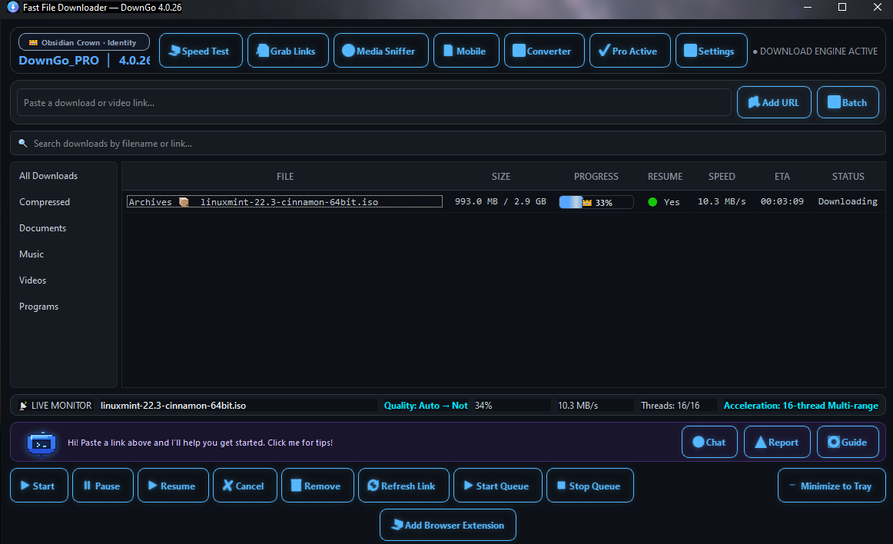
Download manager
The main window shows the file, downloaded size, progress, resume availability, speed, estimated time, and status. The live monitor also reports the active transfer and thread count.
Free allows up to 4 connections and Pro up to 32 when supported by the server. The engine adapts to source capabilities; actual speed depends on the host and your network.
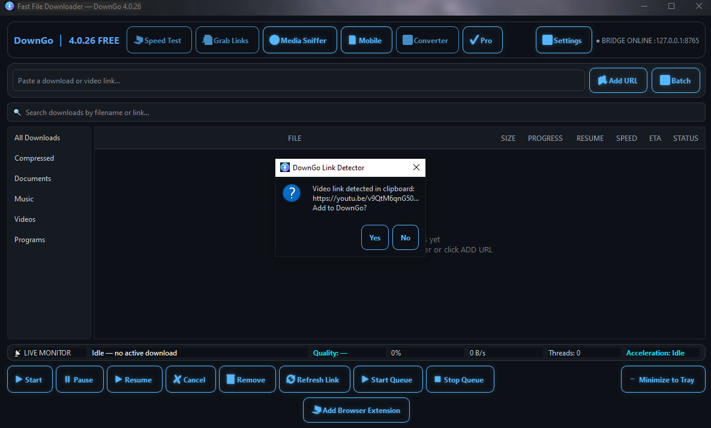
Browser handoff
The Link Detector can recognize a supported video link copied to the clipboard and ask whether to add it to DownGo. Review the source and make sure you have permission to download its content.
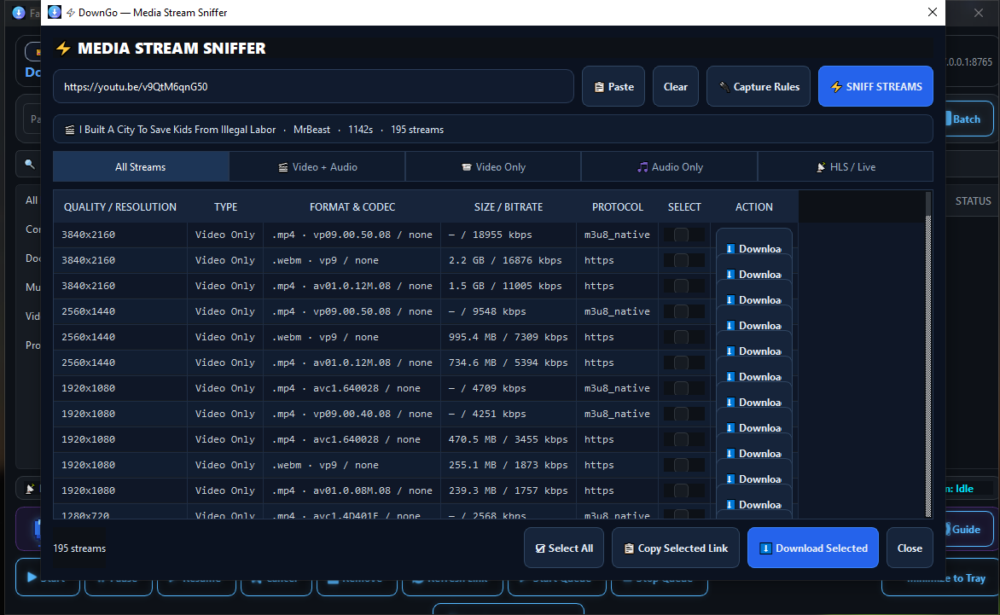
Media Stream Sniffer
Enter a page URL to inspect streams the source makes available. The list can show resolution, format, codec, size or bitrate, and protocol. Stream availability and quality depend on the source and your network.
Use media tools only where you have permission and in line with the source platform’s rules.
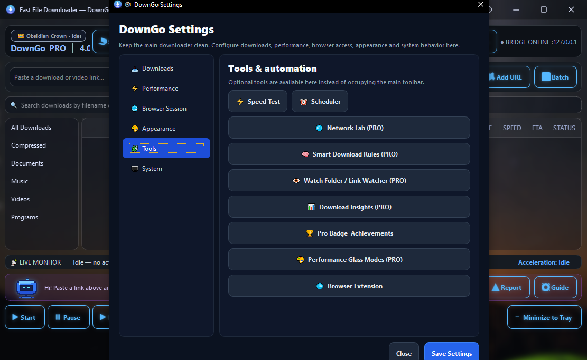
Tools and automation
The tools screen groups Speed Test, Scheduler, Network Lab, Smart Download Rules, Watch Folder / Link Watcher, Download Insights, performance themes, and browser extension controls. Pro tools are marked in the app.
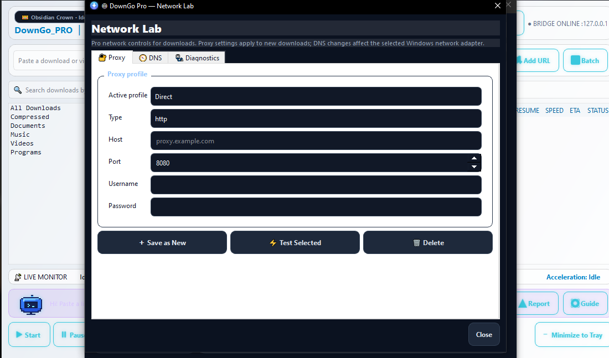
Network Lab · Pro
The Network Lab screenshot shows proxy profile fields for connection type, host, port, and optional credentials. The app also includes DNS and diagnostics tabs. Use proxy credentials only with a provider and connection you trust.
DownGo 4.0.26 screenshot gallery
See real screens for downloads, settings, network tools, and browser integration.
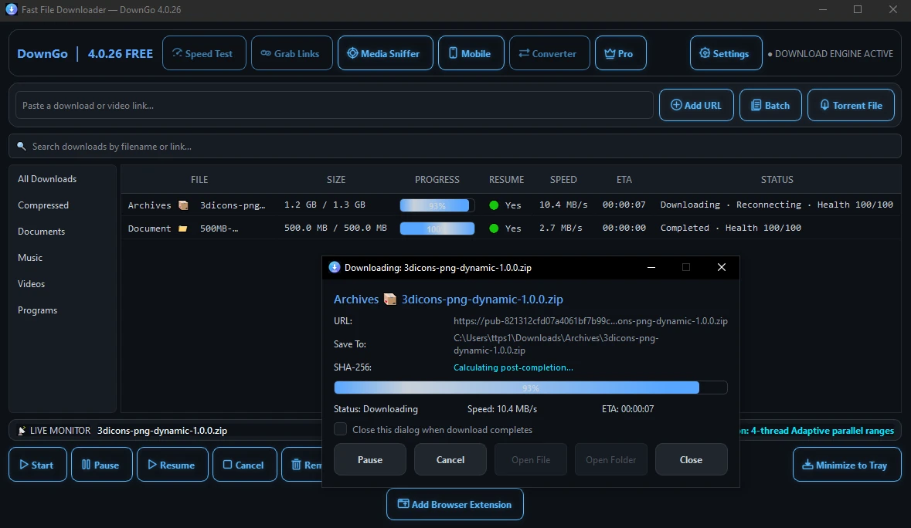
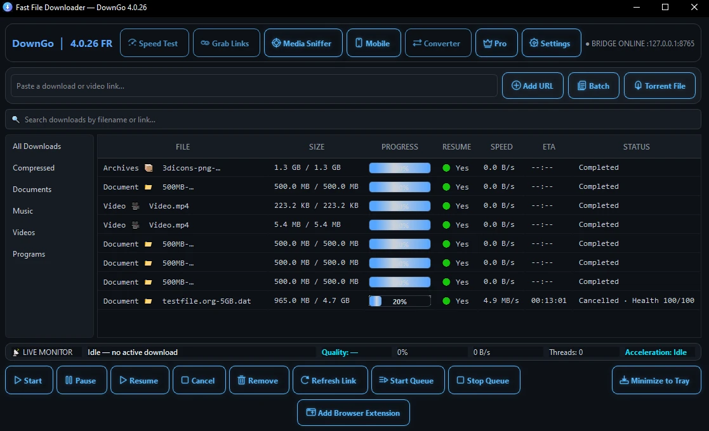
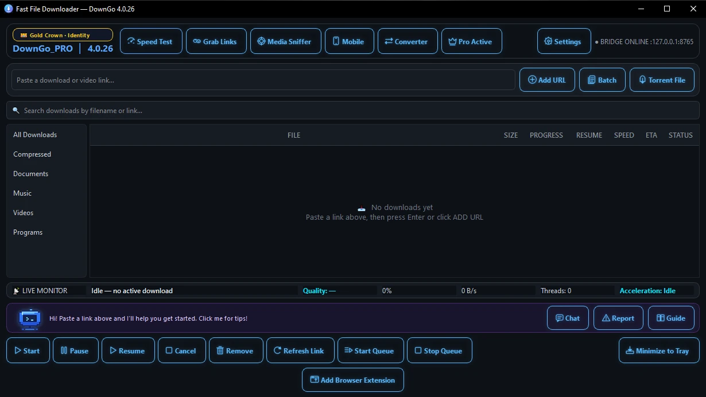
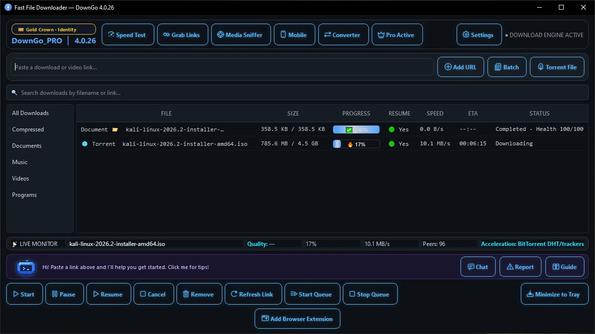
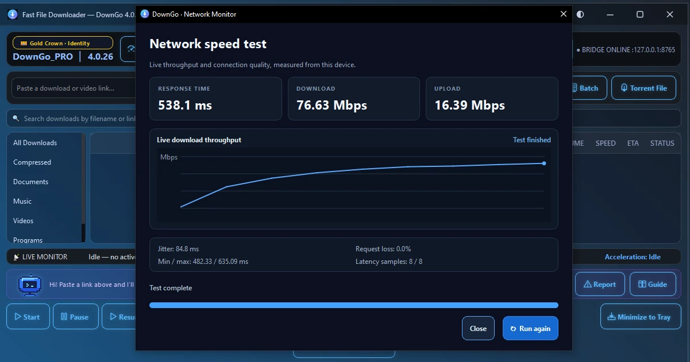
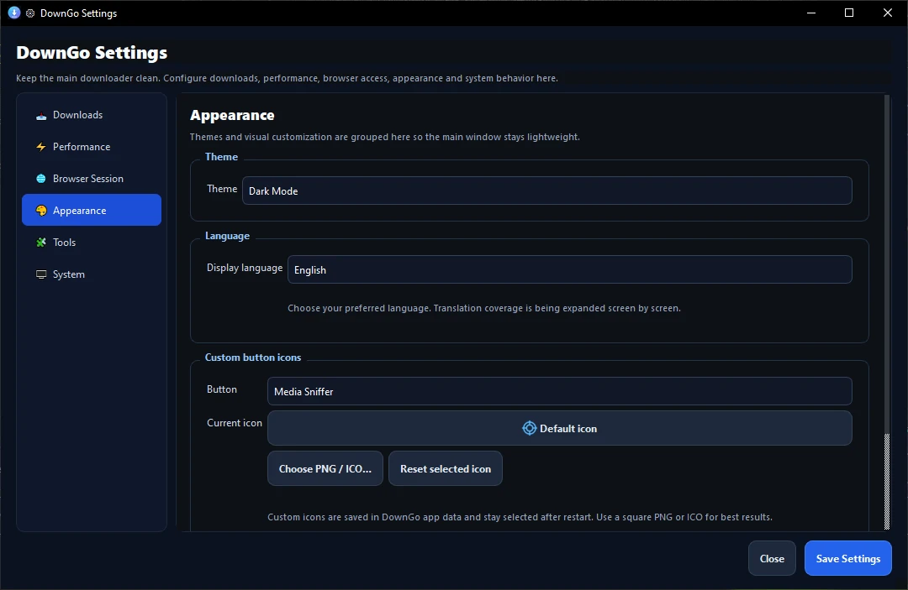
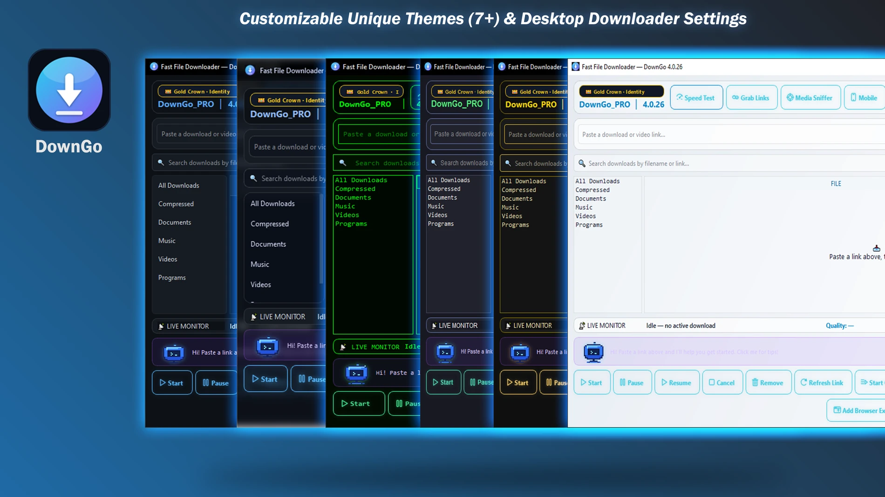

Microsoft Store
Free to download with in-app purchases. Check the Store listing for current details.